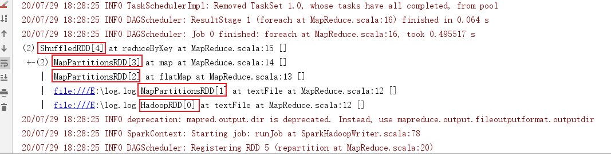
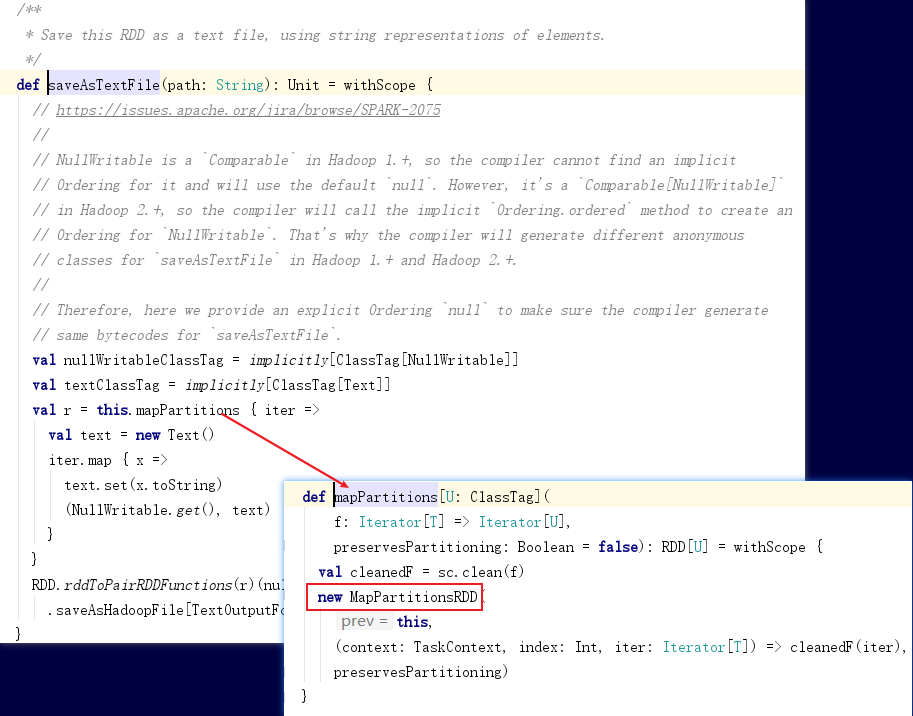

使用sparkContext.textFile读取测试数据，生成一个RDD[String]。
flatMap(line => line.split(","))负责把每行组成的RDD按分隔符切开压平成由单词组成的RDD。
map(word => (word, 1))把每个word变成(word,1)，用于后续相加。
reduceByKey((x, y) => x + y)把key相同的的单词，按key-value划分成一组，然后每组count聚合。
repartition(1)合并输出文件个数，使用saveAsTextFile存储数据。
import org.apache.spark.rdd.RDD
import org.apache.spark.sql.SparkSession
import org.apache.spark.SparkConf
object MapReduce {
def main(args: Array[String]): Unit = {
deleteDir("E:\\***")
val conf: SparkConf = new SparkConf().setMaster("local[*]").setAppName("MapReduce")
val spark: SparkSession = SparkSession.builder().config(conf).getOrCreate()
val txtrdd: RDD[String] = spark.sparkContext.textFile("file:///E:\\**.log")
val words: RDD[String] = txtrdd.flatMap(line => line.split(" "))
val pairs: RDD[(String, Int)] = words.map(word => (word, 1))
val wordCount: RDD[(String, Int)] = pairs.reduceByKey((x, y) => x + y)
wordCount.foreach(w => {
println(w._1 + "--" + w._2)
})
wordCount.repartition(1).saveAsTextFile("file:///E:\\***")
spark.stop()
}
一直到wordCount生成，new了5个RDD，可以通过wordCount.toDebugString查看，如图:

保存数据的时候，使用saveAsTextFile也产生了1个RDD。查看源码可知：
